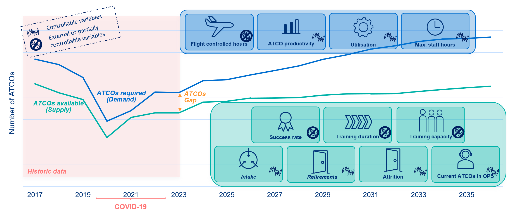

How interventions can work
Measures influence the ATCO gap by changing demand, supply or the timing of workforce availability. Linking measures to model variables makes their potential effects easier to compare.
Linking interventions to model variables
Whilst the ATCO gap provides a quantitative measure of workforce imbalance, its analytical value lies in identifying the factors that create that imbalance and the measures capable of reducing it.
The supply-demand model is therefore built around a limited number of variables that determine the evolution of both ATCO demand and ATCO supply over time. These variables were selected based on the literature review, the baseline datasets and the evidence collected through interviews and surveys, and represent the principal mechanisms through which workforce, training, licensing and operational factors influence the future availability of controllers.

The model brings together the variables that shape workforce demand and supply.
On the demand side, the number of controllers required depends primarily on the level of traffic demand and on the operational capacity that each controller can provide. Variables such as ATCO productivity, utilisation and maximum staff hours determine how efficiently traffic can be accommodated and therefore influence the number of controllers required by the system.
On the supply side, workforce availability evolves through a combination of inflows and outflows. Recruitment volumes, training duration, training success rates and training capacity determine the number of new controllers entering operations, whilst retirements and attrition reduce the available workforce over time. Together, these variables shape the long-term evolution of controller availability across the European ATM network.
Some model variables are external or only partly controllable. Others can be influenced through workforce, training, licensing and operational policies.
Challenges affect workforce availability by constraining one or more model variables. Potential solutions can therefore be assessed through the variables they influence and their contribution to reducing the projected gap.
The model variables, their definitions and their principal data sources are set out in the supply–demand model.
How changes act on the gap
The variables included in the model affect the ATCO gap in different ways. Understanding these differences is important for interpreting the sensitivity analysis, as not all variables have the same type or timing of effect. Three main mechanisms can be distinguished.
- Multiplicative variables (demand side): ATCO demand is calculated by dividing the number of flight hours controlled by productivity, maximum staff hours and utilisation, as explained in model specification. These three variables therefore directly influence the number of controllers required. For example, higher productivity means that each controller can handle more traffic, reducing the number of controllers needed. The same applies to maximum staff hours and utilisation. The effect is not fully symmetrical, meaning that a decrease in one of these variables increases the workforce requirement by more than an equivalent increase reduces it.
- Flow variables (supply side): Intake, training success rate and attrition affect the number of controllers entering and leaving the operational workforce each year. Their impact therefore builds up over time. An increase in intake or training success rate results in more controllers eventually reaching operations, while higher attrition reduces the workforce. However, these changes do not have an immediate effect, as new recruits need to complete the training process before becoming ATCOs.
- Training process variables: Training capacity and training duration determine how effectively new recruits can progress through the training process. Training capacity limits the number of trainees that can be processed, meaning that increasing intake or training success rate will have a limited effect if sufficient training capacity is not available. Training duration also determines how quickly recruits can reach operations and, in the model, affects the number of trainees that can be processed through a given number of training places. Reducing training duration can therefore improve the speed of the pipeline, although it does not by itself increase the number of controllers if other constraints remain unchanged.
Functional classification of the model variables (Source: Consortium assessment)
| Variable | Side | Mechanism | Effect over time |
|---|---|---|---|
| ATCO productivity | Demand | Multiplicative | Immediate |
| Utilisation | Demand | Multiplicative | Immediate |
| Maximum staff hours | Demand | Multiplicative | Immediate |
| Intake | Supply | Flow (inflow) | Cumulative, lagged |
| Success rate | Supply | Flow (inflow) | Cumulative, lagged |
| Attrition | Supply | Flow (outflow) | Cumulative |
| Training capacity | Supply | Ceiling | Conditional |
| Training duration | Supply | Delay and ceiling | Conditional |
Not all model variables are equally actionable. Flight hours controlled is determined by traffic demand and therefore lies outside the control of ANSPs. It drives the demand side of the model but cannot be used as a lever. On the supply side, the same applies to retirements and the existing stock of controllers already in operations, which are governed by the current workforce's age structure rather than by present-day decisions. These variables are essential for quantifying the gap, but the sensitivity analysis that follows focuses on the variables that ANSPs, or, where relevant, regulators, can influence.